A bathroom usually gets a fraction of the design attention the rest of your home receives, but it's just as capable of being genuinely stylish and expressive as any other room in the house.
The right style turns a purely functional space into one that actually feels considered.
None of these seventeen directions require a full gut renovation to pull off, either. A few key material or color choices, applied with real intention, carry most of the transformation on their own.

1. High-Tech Haven
If you want a bathroom that genuinely feels like it belongs in the future, high-tech features change your whole daily routine.
Voice-activated lighting, smart mirrors, and heated floors all let the space adapt to whoever's actually using it.
Pair it with sleek, modern finishes, and you get a genuinely futuristic sanctuary that still earns its keep every single day.
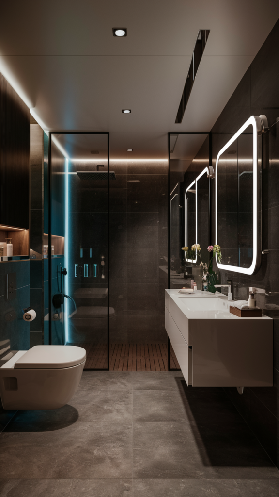
2. Monochrome Magic
There's something genuinely satisfying about a black-and-white bathroom. Crisp, bold, and it always feels fully pulled together.
Playing with texture is what keeps it interesting — matte tile, a glossy floor, or a patterned backsplash all add depth within the same two-color palette.
It's one of the few looks here that genuinely never seems to go out of style, no matter what's trending elsewhere that year.
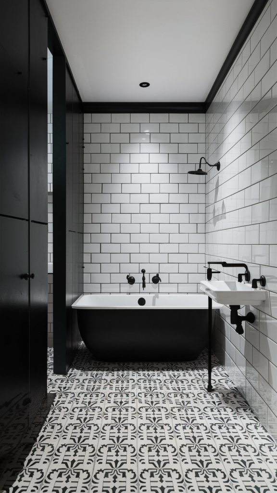
3. Vintage Victorian
If you genuinely love a little drama, Victorian style delivers it in the best possible way.
A freestanding tub, ornate mirrors, antique hardware, and a floral wallpaper pattern all build toward something romantic.
That floral wallpaper especially tends to steal the whole room's attention the second anyone walks in.
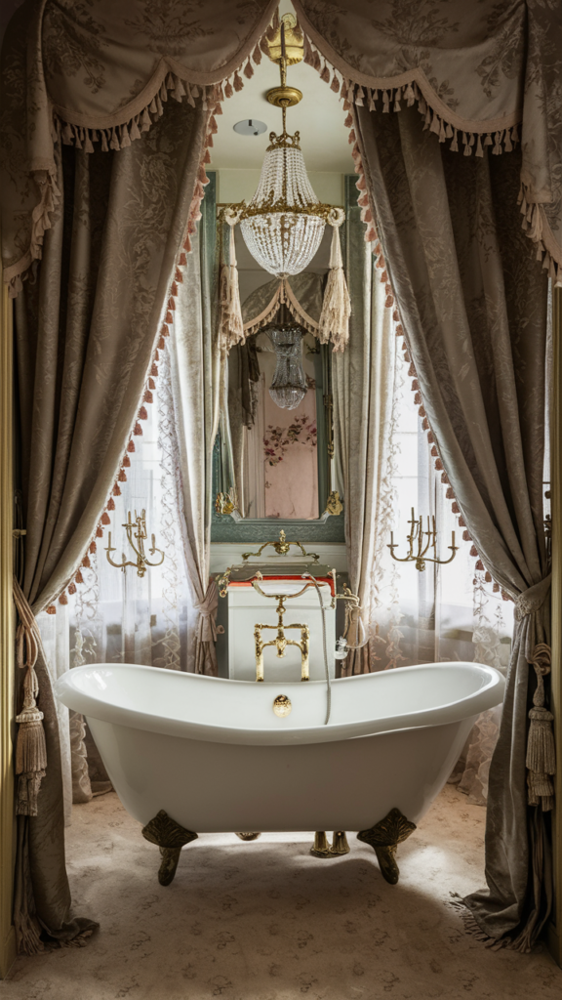
4. Art Deco Glam
Art Deco bathrooms are unapologetically glamorous. Think Gatsby, reimagined entirely in tile.
Deep jewel tones like navy, emerald, and burgundy, paired with geometric patterns and gold accents, build all the drama.
Dramatic lighting finishes the whole look, and even a quick visit starts to feel like a small occasion.
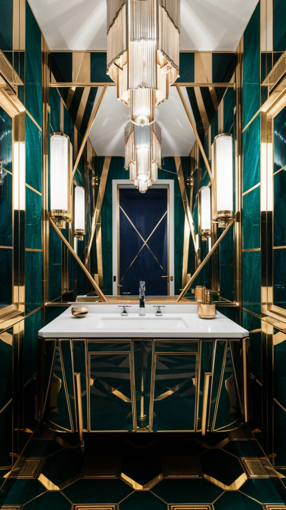
5. Mediterranean Magic
A Mediterranean-inspired bathroom turns an ordinary morning into a small daily escape.
Earthy tiles, colorful mosaics, terracotta accents, and genuine stone textures build that warm, sun-soaked feeling.
A single mosaic backsplash can be enough to make a rushed weekday morning feel like it's happening somewhere considerably sunnier.
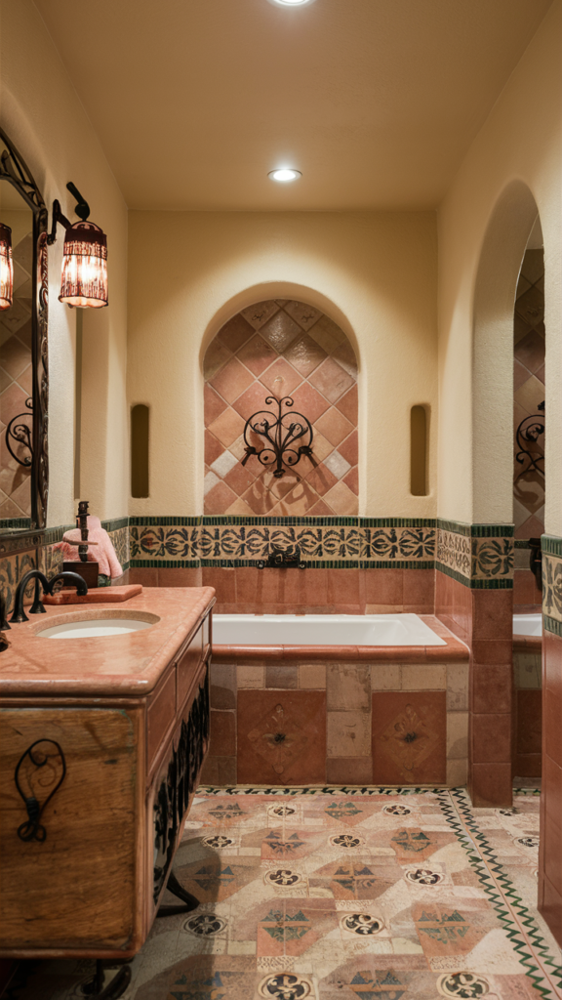
6. Japandi Fusion
Japandi blends Japanese minimalism with Scandinavian coziness, and honestly, the combination is hard to beat for a calm bathroom.
Soft neutral tones, light wood finishes, and an ultra-functional, clutter-free layout define the whole approach.
It reads as peaceful in a way that's close to a boutique hotel bathroom, which is exactly the energy most people are chasing here.
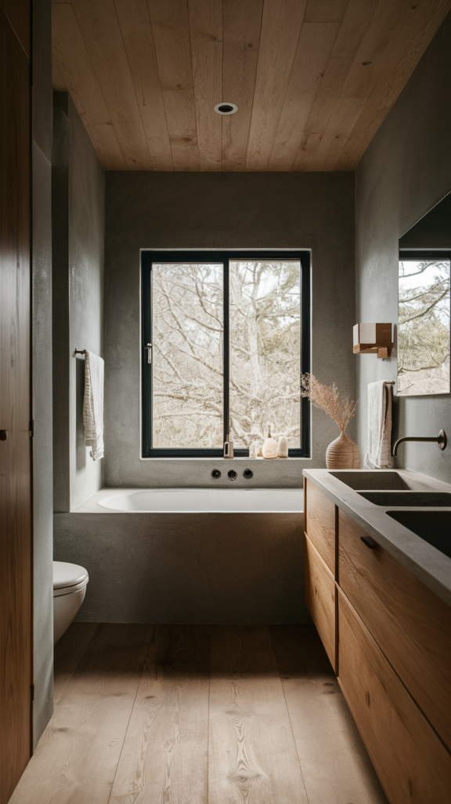
7. Contemporary Chic
If you want clean, modern lines without losing all your personality in the process, contemporary chic hits that exact sweet spot.
Floating vanities, a frameless glass shower, and just the right touch of minimalism define the look.
It reads as sleek without ever tipping into sterile, which is a harder balance to strike than it sounds.
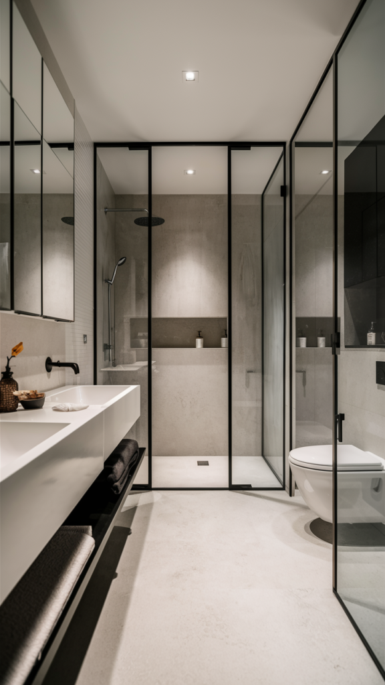
8. Retro Revival
Pastel tile and vintage fixtures have a genuine, undeniable charm that modern design keeps circling back to.
A mid-century vanity, globe lighting, and a pop of mint green or blush pink build the whole look.
Add in a little brass hardware, and the bathroom turns into something close to a stylish time machine.
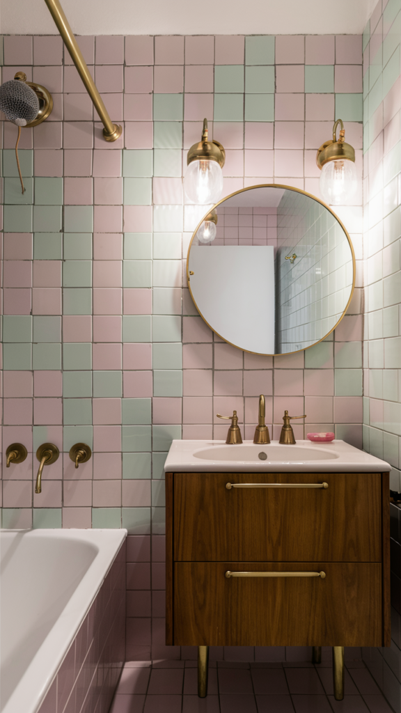
9. Bohemian Bliss
If your personal style is organized chaos, a boho bathroom is exactly where that energy belongs.
Macramé, textured rugs, and layered patterns all welcome bold color without a second thought, and houseplants are basically a requirement.
That combination of plants, pattern, and personality tends to make this one of the rooms people actually want to linger in.
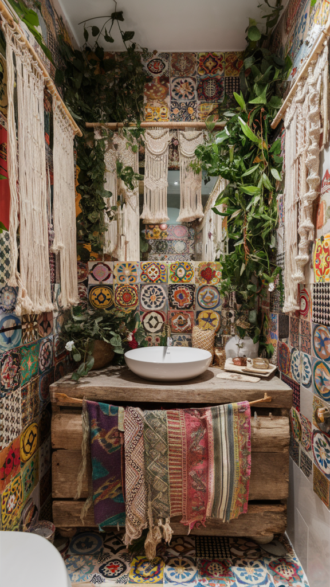
10. Classic White Marble
For a bathroom that never actually goes out of style, white marble remains close to unbeatable.
It works beautifully across floors, countertops, even wall panels, and it pairs especially well with chrome fixtures.
Even a house that otherwise leans toward builder-grade basics instantly reads as more elevated the moment marble enters the bathroom.
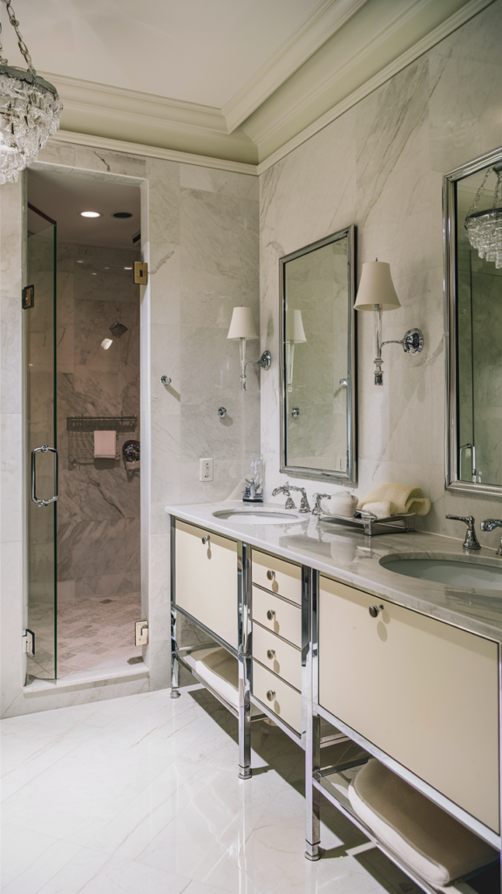
11. Spa-Like Serenity
Turning an everyday bathroom into something closer to a spa is a genuinely achievable goal, not just an aspirational one.
Soft, calming lighting, natural stone finishes, and a rainfall showerhead do most of the transformation on their own.
Add a few plants and a lit candle, and the whole space starts functioning as a real daily reset instead of just a bathroom.
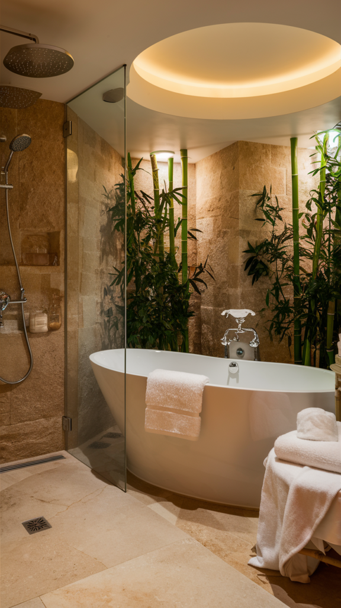
12. Minimalist Elegance
If you treat "less is more" as a genuine design philosophy, a minimalist bathroom delivers real calm.
Clean lines, soft neutrals, and zero visible clutter define the look, with wall-mounted fixtures and hidden storage doing most of the heavy lifting.
Even a genuinely tiny bathroom can feel open and breezy once the clutter disappears. The restraint is what makes it feel bigger than it actually is.
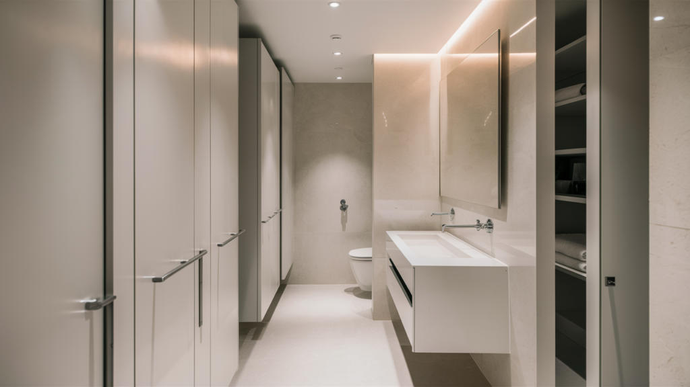
13. Modern Industrial
If you're drawn to exposed pipes and matte black finishes, modern industrial is the clear direction to lean into.
Raw concrete, steel accents, and real brick walls build the edgy foundation this style is known for.
The key is balance. Warm wood tones and a plush rug or two keep the space from reading as a cold warehouse instead of a bathroom.
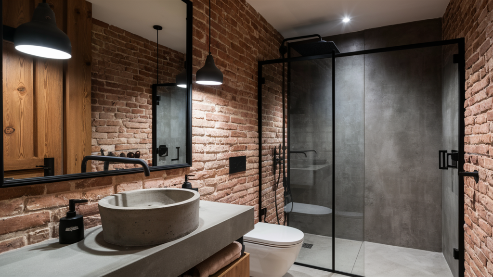
14. Coastal Retreat
When an actual beach trip isn't in the cards, a coastal bathroom brings the feeling home instead.
Soft blues and sandy beige tones, sea glass tile, driftwood accents, and natural textures like jute and rattan all build that relaxed, breezy mood.
It has a way of making an ordinary morning routine feel like a small vacation, which is the entire appeal of the style in the first place.
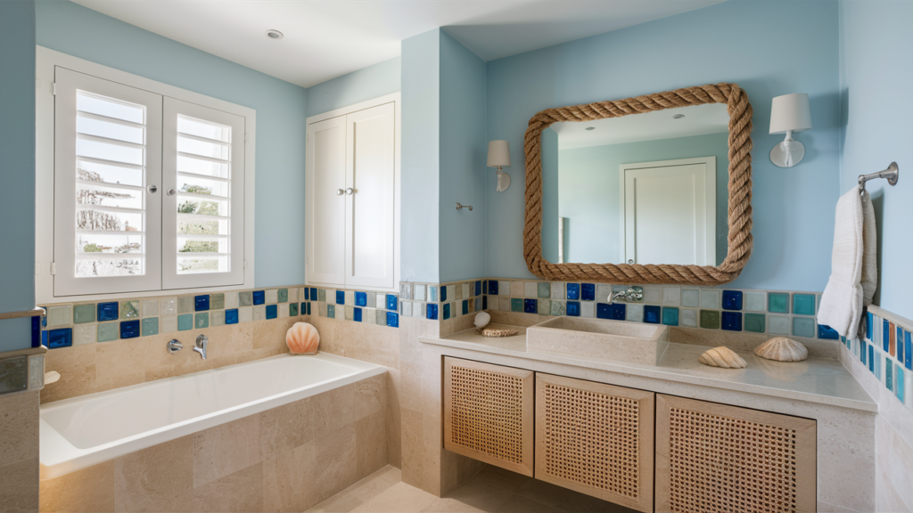
15. Rustic Retreat
If you're drawn to a cozy cabin feeling, a rustic bathroom delivers that warmth reliably.
Natural materials carry the whole look — stone, weathered wood, and warm, low lighting throughout.
The result feels calm and genuinely inviting, whether your house is actually in the woods or just borrowing the feeling.
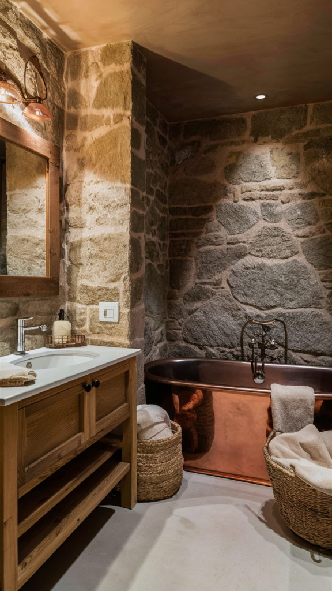
16. Eco-Friendly Design
An eco-friendly bathroom proves that doing right by the planet and having a genuinely stylish space aren't in conflict with each other.
Reclaimed materials, water-saving fixtures, and sustainable material choices form the foundation of the look.
A little greenery and genuine natural light layered on top, and the whole thing reads as considered rather than just conscientious.
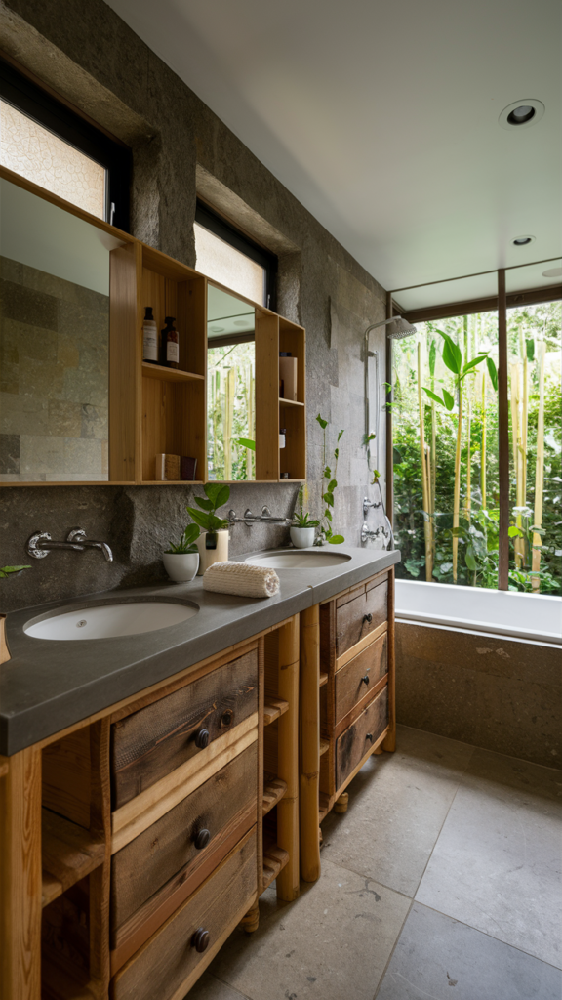
17. Farmhouse Charm
Farmhouse style brings a warmth that somehow makes a whole space feel curated without ever trying too hard.
Shiplap walls, weathered wood accents, and vintage-inspired hardware build the look, with a clawfoot tub earning genuine bonus points.
A sliding barn door is one of the single biggest style upgrades available here. It shifts a bathroom from ordinary to genuinely photo-worthy almost instantly.
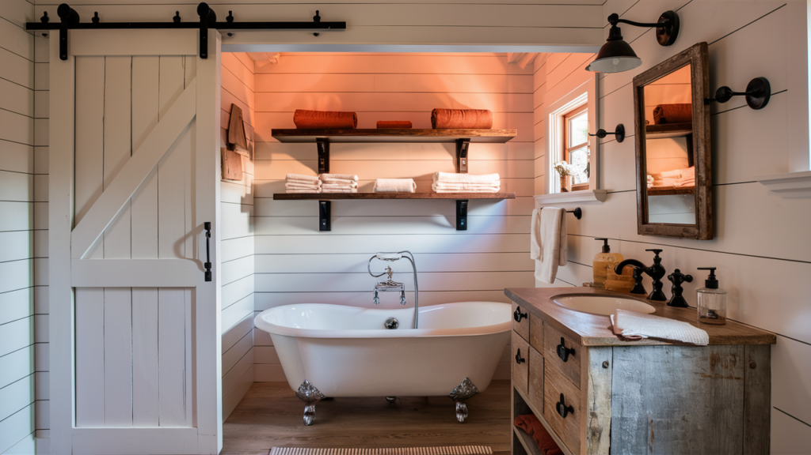
There's No Single Right Way to Do This
Seventeen distinct bathroom styles, from a futuristic sanctuary to something with real farmhouse charm, prove there's no one right way to approach this room.
Think about the overall vibe of the rest of your home, and whatever preferences already feel most natural to you, before picking a direction.
The bathroom you'll actually enjoy daily is the one that genuinely fits you, not the one that just photographed best somewhere else.